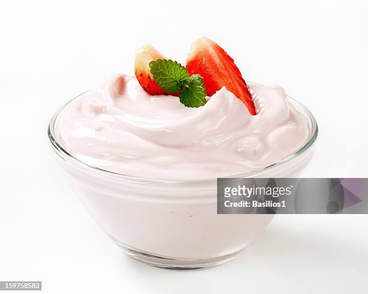

How to make Yoghurt

Description
Delicious post-meal alternative snack
Ingredients
- 1 gallon 2% milk
- 1 cup plain yogurt with active cultures
Steps
- Pour milk into a pot and bring to a boil, stirring occasionally to prevent sticking.
- Reduce the heat and simmer for about 10 minutes; do not let it boil over.
- Remove from the heat and let sit until you can leave your finger dipped into the milk for 10 to 15 seconds without it burning, 30 to 60 minutes.
- Pour in yogurt; there's no need to stir.
- Put the lid on the pot and carefully wrap a blanket around it. Place the wrapped pot in a slightly warm place where it will be undisturbed for 6 to 10 hours.
- Transfer to the refrigerator to allow the yogurt to continue to thicken.